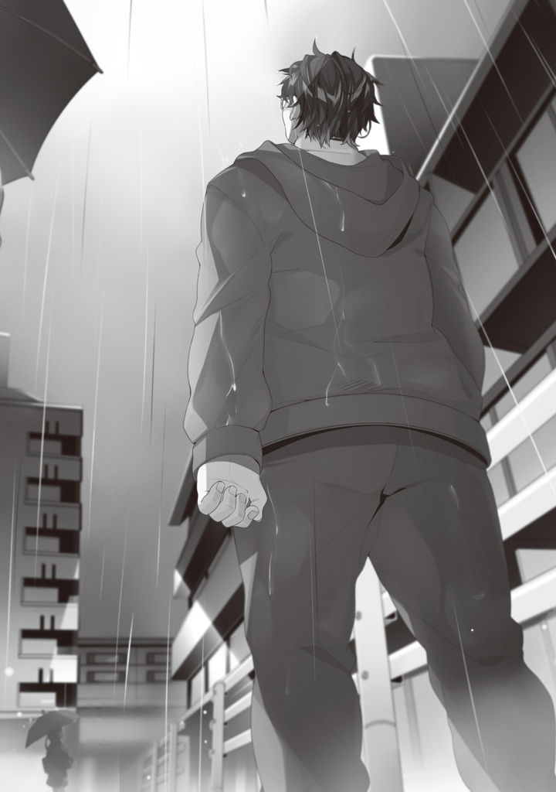

Volume 1 · Unofficial AI-assisted fan translation
Prologue
Me: thirty-four, no fixed address, jobless.
I'm right in the middle of regretting my entire life. A chubby, fugly, all-around nice guy.
Until about three hours ago, I wasn't "no fixed address." Just a veteran shut-in NEET.
But before I knew it, my parents were dead.
Shut in as I was, I didn't show up for the funeral, obviously, or even the family council.
The result: I got spectacularly kicked out of the house.
I'd mastered floor-banging and wall-banging and acted like I owned the place. Not one person in that house was on my side.
On the day of the funeral, in the middle of bridge mastur○ation, my brothers and sisters in their mourning clothes suddenly stormed into my room and thrust a letter of disownment at me.
When I ignored them, my younger brother took a wooden bat to my computer, more precious to me than life, and went and destroyed it.
I flailed around in a half-crazed frenzy, but my older brother had a black belt in karate, so I was the one who got beaten to a pulp.
When I tried to get out of it by bawling pathetically, I was thrown out of the house with nothing but the clothes on my back.
Clutching my throbbing side (my ribs are probably broken), I trudged through town.
The abuse my siblings hurled at me as I left the house was still ringing in my ears.
Insults too vile to listen to.
My spirit was completely broken.
What the hell did I even do?
All I was doing was blowing off my parents' funeral and mastur○ating to uncensored loli pics...
What do I do now?
No, I know. In my head, at least.
I look for a part-time job or steady work, find a place to live, and buy food.
How?
I don't know how to look for work.
No, I do know, if only vaguely, that I should go to the job center.
But I haven't been a shut-in for over ten years for nothing. There's no way I'd know where the job center even is, and besides, I've heard that even if you go to the job center, all they do is refer you to a job.
I take my résumé to the place they refer me to and have an interview. In these. Filthy sweats, spotted with stains and sweat and blood. An interview.
No way I'd pass. If it were me, I would never hire a guy dressed this crazy. I might feel for him, but I would never hire him.
For that matter, I don't even know what store sells résumés.
A stationery store? A convenience store?
A convenience store, at least, I might find if I keep walking, but I don't have any money.
Let's say, hypothetically, I could clear all of those.
Let's say I got lucky and could borrow money from a financial institution or something, bought new clothes, and bought a résumé and something to write with.
A résumé is a thing you can't fill out without an address, I've heard.
Checkmate. Right here, right now, it sank in: my life was completely checkmated.
"...Haah."
It started to rain.
Summer was already over, too, and it was the time of year when it starts getting chilly. The cold rain soaked right through the sweats I'd worn for years and stole my body heat without mercy.
"...If only I could start over."

Words like that spilled out of me before I could stop them.
Even I wasn't born a piece of human trash.
I was born the third son of a fairly well-off family. Older brother, older brother, older sister, younger brother. Fourth of five kids. In elementary school, I grew up being praised as smart for my age. Not good at studying, but a cocky kid who was good at games and could do sports too. I was the center of the class.
In middle school, I joined the computer club, and, with magazines for reference, saved up my allowance and built my own PC. My family, who didn't know the first letter of "computer," held me in no end of respect.
My life went off the rails in high school... no, from the third year of middle school. I was so wrapped up in computers that I neglected my studies. Thinking about it now, maybe that was what set it off.
I thought studying wasn't something I'd need in the future. I thought it was useless.
As a result, I got stuck enrolling at an ultra-dumb high school rumored to be rock bottom even within the prefecture.
Even there, I figured I had it made.
Me, the guy who could do it if he only tried: I was made of different stuff from the other idiots. That's what I thought. I really did.
I remember what happened back then, even now.
I was standing in line to buy lunch at the school store when some guy suddenly cut in.
Playing the champion of justice, I complained to the guy. Back then, I had a weird sense of pride and a personality overflowing with chuunibyou spirit; that's what made me pull such a reckless stunt.
But, worst of all, the other guy was an upperclassman, and one of the top two most dangerous guys even at that school.
As a result, I was beaten by him and his gang until my face swelled up, and crucified stark naked on the school gate.
They took lots of photos too, and with the greatest of ease, half for laughs, spread them all over the school.
My place in the hierarchy dropped to the lowest rung in an instant, and they stuck me with the nickname "Foreskin" and teased me with it.
Before I'd been going to school even a month, I stopped going and shut myself in. My father and my older brother, seeing me like that, threw irresponsible words at me: have some courage, hang in there, that kind of thing. I ignored every one of those words.
It's not my fault.
In a situation like that, who could go to school?
Put anyone in a situation like that, and they couldn't go to school. No way they could.
So, no matter who said what to me, I resolutely stayed shut in.
I thought everyone I knew my own age was looking at my photos and laughing.
Even without leaving the house, as long as I had a computer and the internet, I could kill as much time as I wanted. Influenced by the internet, I got interested in all sorts of things and did all sorts of things. Building plastic models, trying my hand at painting figures, trying out a blog. My mother, as if cheering me on, gave me as much money as I wanted whenever I begged.
But, I got tired of every one of them within a year.
I'd see people better than me, and my motivation would just evaporate.
To an outsider, it probably looked like I was just playing around, but for me, left behind by time all alone and shut up in a dark shell, there was nothing else I could do.
No, looking back now, that's just an excuse.
It would at least have been better to announce I was going to be a manga artist and try serializing some crappy web manga, or announce I was going to be a light novel author and try posting a novel.
Plenty of guys in circumstances like mine were doing just that.
Guys like that, I looked down on.
I'd look at what they made and snort, and pose as a critic and trash it: "This is less than shit."
When I myself wasn't doing a thing...
I want to go back.
If I could, to my best days, elementary school or middle school. No, even a year or two ago would do. If I had even a little time, I surely could have done something. I quit every one of them halfway, so every one of them I could pick up again from the middle.
If I'd gotten serious, even if I couldn't be number one, I might have become a decent enough pro.
"......"
Why have I never done anything, all this time?
I had the time. All that time, I was shut in my room, but even sitting in front of the computer, there were surely any number of things I could have done. Even if I couldn't be number one, I could surely have kept hanging in there as a mid-ranker in some field, any number of ways.
Manga would do, novels would do. Games, or programming. If I'd worked seriously at something, anything, I surely could have left some kind of result behind. Whether it would have turned into money, that aside...
No, forget it. It's pointless.
I couldn't hang in there. Even if I went back to the past, I'm sure I would have tripped on similar things and stalled at similar things. I couldn't get past the spots an ordinary person is supposed to get past without even thinking, and that's why I'm here now.
"Hm?"
Just then, in the heavy rain, I heard the sound of someone arguing.
Is it a fight, I wonder.
Ugh, I don't want to get mixed up in that. Even as I thought that, my feet were heading straight toward it.
"—I'm telling you, you—"
"You're the one—"
What I found were three high school students, apparently in the middle of a lovers' quarrel.
Two guys and one girl. Rare these days: stand-up-collar jackets and a sailor uniform.
It seemed to be a shuraba, the strikingly tall boy and the girl arguing about something. The other boy had stepped between them, trying to calm them down, but the two in the fight weren't listening.
(Ah, I had one of those too.)
Watching them, I remembered the old days.
In middle school, I had a cute childhood friend too. Cute, though, meant about fourth or fifth in the class. She was on the track team, so her hair was very short. Walk through town and pass ten people, and two or three of them might turn to look: that kind of face. Then again, to me, who'd gotten hooked on a certain anime and declared without shame that track team means ponytails, she was a total dog.
But, our houses were close, and we were often in the same class in elementary and middle school, so even once we were in middle school, we walked home together a few times. We had plenty of chances to talk, and we'd bicker. What a waste. The way I am now, middle schooler, childhood friend, track team: those words alone and I'd be good for three rounds.
Incidentally, I heard through the grapevine that this childhood friend got married seven years ago.
When I say "through the grapevine," I mean a conversation between my siblings that carried in from the living room.
It was by no means a bad relationship. We'd known each other since we were little, so we could talk without holding back.
I don't think she was in love with me or anything, but if I'd studied more and gotten into the same high school as her, or, if I'd joined the same track team and gotten in on a recommendation, I might have raised a flag, at least one. If I'd seriously confessed to her, we might at least have been able to go out.
And then, like them, we'd bicker on the way home. And if I got lucky, some dirty stuff in an empty classroom after school, too.
Hah, what is this, some eroge?
(Put that way, those guys are total normies with a life. Go explode... Hm?)
And then, at that instant, I noticed.
A truck, charging at the three of them at full speed.
And the truck's driver, slumped over the wheel.
Asleep at the wheel.
The three of them hadn't noticed yet.
"Ah, ah, w-watch, ouuut,"
I meant to shout on reflex, but my vocal cords, which had barely made a proper sound in over ten years, shrank even tighter from the pain in my ribs and the cold of the rain; all they put out was a pathetic, trembling voice, and the sound of the rain drowned it out.
I have to save them, I thought. At the same time, I also thought, why would I of all people do that.
But, if I didn't save them, I knew by instinct that five minutes from now I would surely regret it. Seeing the three of them hit by the truck charging in at terrifying speed and squashed to mush, I knew by instinct that I would regret it.
That I should have saved them.
So I have to save them, I thought.
Soon, I would surely die by the roadside somewhere around here, but I'd been thinking that at least at that moment, I wanted to feel some small sense of satisfaction.
I didn't want to be regretting it until the very last moment.
—I ran, all but tumbling.
My legs, which had barely moved properly in over ten-plus years, wouldn't listen to me. If only I'd exercised more, I thought, for the first time in my life. My broken ribs gave off a terrible pain, trying to stop my legs. If only I'd gotten more calcium, I thought, for the first time in my life.
It hurt. It hurt so much I couldn't run right.
But I ran. I ran.
I could run.
Noticing the truck bearing down right in front of them, the boy who'd been fighting pulled the girl into his arms. The other boy had his back turned, so he still hadn't noticed the truck. He was staring blankly at them for suddenly doing something like that. Without hesitating, I grabbed the collar of the boy who still hadn't noticed and pulled him backward with all my strength. Pulled by me, the boy rolled out of the truck's path.
Okay, two more.
The moment I thought that, the truck was right in front of me. I'd meant to reach out with just my arms from somewhere safe and pull them, but when you pull a person, the reaction moves you forward.
It's only natural. It made no difference that I weighed over 100 kilos. My legs, shaking from the all-out sprint, stepped forward all too easily.
At the moment the truck hit me, I felt as if something flashed behind me.
Was that the famous life flashing before my eyes? It was over too fast to tell. Far too fast.
So my life had been that thin.
I was sent flying by a truck that weighed over fifty times as much as I did, and slammed into a concrete outer wall.
"Gah...!!"
The air in my lungs was forced out in an instant. My lungs, starved for oxygen from the all-out sprint, spasmed.
I couldn't even make a sound. But, I wasn't dead. All that fat I'd packed on had saved me...
So I thought, but the truck was still bearing down on me.
I was caught between the truck and the concrete, squashed like a tomato, and died.